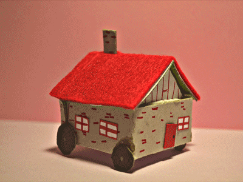

CASA INTELIGENTE

Selecciona la opción que deseas realizar:
×
Acerca del proyecto

SISTEMAS EMBEBIDOS
IMPARTIDA POR:
MC. JONAM LEONEL SÁNCHEZ CUEVAS.
EQUIPO: A - Z
EIMY LU-RUHAMA CRUZ RODRÍGUEZ, 19051114.
BRANDON ALEXIS PRADO CASTRO, 19051178.
MARIO ORLANDO TORRES SALAZAR, 19051220.
Viernes 8 de diciembre de 2023
Acerca del proyecto
SISTEMAS EMBEBIDOS
IMPARTIDA POR:
MC. JONAM LEONEL SÁNCHEZ CUEVAS.
EQUIPO: A - Z
EIMY LU-RUHAMA CRUZ RODRÍGUEZ, 19051114.
BRANDON ALEXIS PRADO CASTRO, 19051178.
MARIO ORLANDO TORRES SALAZAR, 19051220.
Viernes 8 de diciembre de 2023